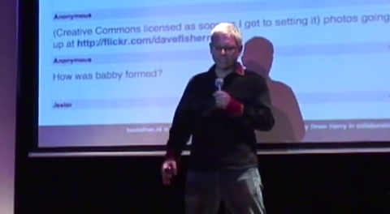

Vincent was born in Boston, Massachusetts on September 26. He studied at the New York institute of technology where he received a bachelor's degree in Fine Arts. At a later time he received a masters in Type Design at the University of Reading. He was employed at Microsoft after he received his Bachelor's Degree. It was in 1994 when Vincent created Comic Sans but it only really took off in 1995. Now he writes documentation, trains young font engineers, delivers conferences at lectures around the world and gives interviews.
